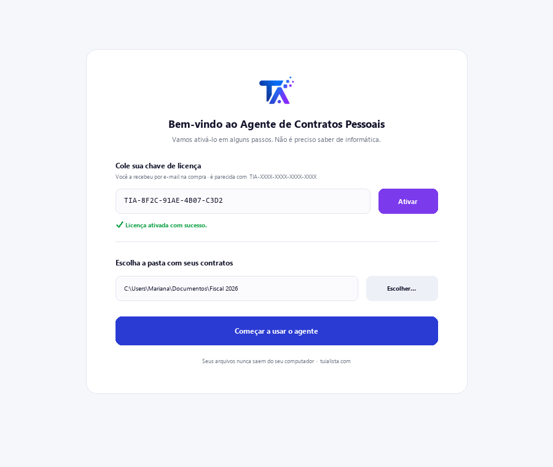
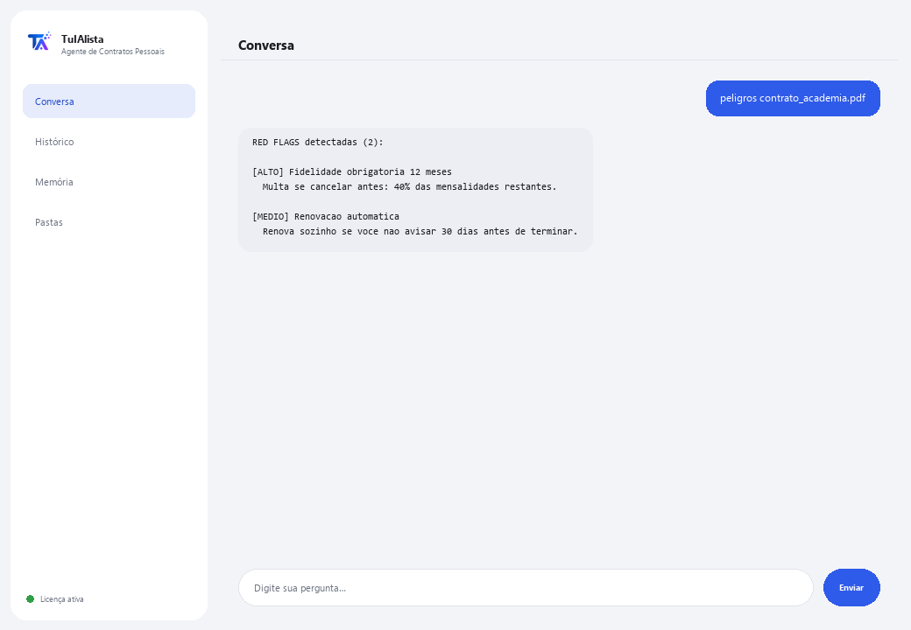

Agente de Contratos Pessoais
Explica em palavras simples qualquer contrato que você esteja prestes a assinar e avisa sobre cláusulas que podem prejudicar você.
O que resolve e o que você precisa?
Um advogado cobra entre US$ 100 e US$ 300 para revisar um contrato. Este agente faz isso instantaneamente, quantas vezes você quiser, com privacidade total, para contratos do dia a dia: aluguel, telefonia, academia, crédito, um emprego.
- Você precisa: sua chave de licença (TIA-XXXX-XXXX-XXXX-XXXX) e o contrato (ou a pasta com seus contratos). Nada de Python nem conhecimento técnico.
- Primeiro resultado em menos de 5 minutos: instala, ativa, carrega seu contrato com cargar e roda peligros para ver quais cláusulas revisar.
- Seu contrato nunca sai do seu computador — a análise roda localmente.
soporte@tuialista.com ou acesse tuialista.com/soporte — normalmente respondemos no mesmo dia útil.1 O que este agente faz
Você aponta para o contrato (ou a pasta com seus contratos) e ele:
- Explica em linguagem do dia a dia: o que você está assinando, com o que está se comprometendo, quanto paga e por quanto tempo.
- Detecta cláusulas arriscadas para o consumidor (renovação automática, fidelidade obrigatória, multas, reajustes unilaterais de preço, taxas ocultas, débito automático, cessão de dados, juros altos...).
- Lista suas obrigações concretas (o que você deve fazer, quando e quanto).
- Extrai todos os custos e estima o custo total se você cumprir o contrato completo.
- Explica como e quando você pode cancelar e quanto custa.
- Sugere perguntas que você deveria fazer antes de assinar.
O resultado: você assina realmente entendendo o que está aceitando.
2 Instalação (2 minutos)
Para Windows. Não precisa de internet o tempo todo nem enviar nada para a nuvem.
Baixe o instalador em tuialista.com/descargar (agente Contratos Pessoais) e abra-o. Ele cria um atalho na sua área de trabalho com o logo — não precisa de Python nem terminal.
Dê duplo clique no novo ícone. Cole sua chave de licença (você a recebeu por e-mail na compra) e clique em Ativar. Você verá um check verde quando for válida.
Selecione a pasta com seus contratos e clique em Começar a usar o agente. Na próxima vez ele abre direto — lembra sua chave e sua pasta.

3 Como usar
O agente abre uma janela de chat, como um app de mensagens — não é uma tela preta de programador. Primeiro você carrega o contrato, e depois escreve cada pedido na mesma caixa de texto:

> cargar <arquivo>Carrega o contrato. Depois você pode usar os outros comandos com esse contrato. Ex.: cargar contrato_academia.pdf.
> explica <arquivo>A explicação clara: o que é o contrato, com o que você está se comprometendo, o que podem cobrar a mais, quando termina e como sair.
> peligros <arquivo>Cláusulas que podem prejudicar você, classificadas por nível (ALTO / MÉDIO), com o trecho do contrato onde aparecem. É a única ação que funciona 100% local, sem IA.
> obligaciones <arquivo>Lista concreta: o quê, quando e quanto (ex.: “Pagar R$699 por mês nos primeiros 5 dias de cada mês por 12 meses”).
> costos <arquivo>Mensalidade, matrícula, depósitos, multas, juros, impostos... e o custo total estimado se você cumprir o contrato completo.
> cancelar <arquivo>Se você pode cancelar quando quiser ou há prazo mínimo, como cancelar, com quanta antecedência avisar e o que cobram.
> preguntas <arquivo>Perguntas concretas que você deveria fazer antes de assinar.
> pergunta livre?Com um contrato carregado, pergunte o que quiser, ex.: podem aumentar minha mensalidade durante o contrato?
> sairEncerra a sessão (exit também funciona).
4 Exemplos de uso comum
Antes de assinar em uma academia
cargar contrato_academia.pdf → explica contrato_academia.pdf → peligros contrato_academia.pdf
Entender um crédito
costos contrato_credito.pdf → cancelar contrato_credito.pdf
Se preparar com perguntas
preguntas contrato_aluguel.pdf
Uma dúvida pontual
o que acontece se eu quiser sair antes dos 18 meses?
5 Perguntas frequentes
Meu contrato é enviado para a internet?
Quais formatos ele aceita?
Isso substitui um advogado?
Como ele detecta as cláusulas arriscadas?
O custo total calculado é exato?
Ele guarda meus contratos?
Em que idioma ele responde?
Ele lê um PDF escaneado?
Posso analisar vários contratos?
Ele modifica meu contrato?
6 Solução de problemas
Não lê um .pdf ou .docx
Diz que não conseguiu ler o contrato
Não detecta uma cláusula que eu sei que está lá
Diz “Licença inválida” ou pede para reconectar
“Nenhum provedor de IA configurado”
Nenhuma dessas soluções resolveu seu problema? Escreva para nós diretamente — teremos prazer em revisar com você.
soporte@tuialista.com ou acesse tuialista.com/soporte — normalmente respondemos no mesmo dia útil.7 Privacidade e confidencialidade
Seu contrato nunca sai do seu computador.
- O agente lê e analisa o contrato localmente, no seu próprio computador. Não o envia para nenhum servidor nem o compartilha com ninguém.
- A detecção de cláusulas arriscadas (peligros) acontece 100% no seu computador.
- A única coisa que trafega pela internet é: (1) uma verificação de que sua licença está ativa — que não inclui seu contrato —, e (2) para as explicações e perguntas, um fragmento do contrato (até cerca de 7.000 caracteres) é enviado ao motor de IA para redigir a resposta.